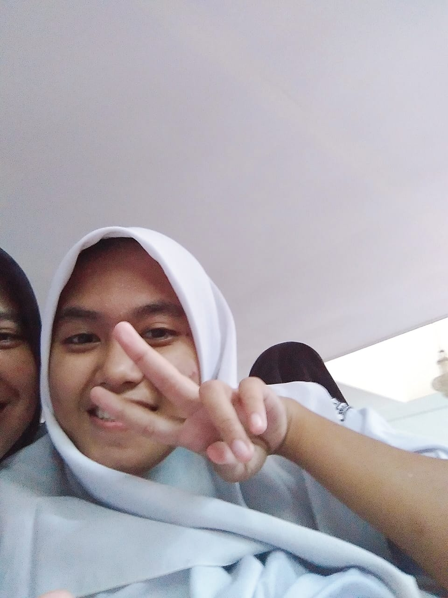

<!DOCTYPE html>
<html>
<head link="">
	<title>Andini Suci Ramadhani</title>
</head>
<body>

</body>
</html>
<body style="background-color: rgb(270,225,200);">
<h1 style="text-align: center;color: rgb(225,10,108);">Pengalaman Pembelajaran Jarak Jauh</h1>


<br>
<br>
<br>
<br>

<style>
table {font-family: arial, sans-serif;border-collapse: collapse;width: 158%}
td{border: 3px solid #dddddd; text-align: left;padding: 10px;}
td:nth-child(even) {background-color: #99ccff}
</style>
<body>
	
<h1 style="text-align: center;color: rgb(90,25,270);">BIODATA</h1>
<table>
	<tr>
		<td>Nama Lengkap</td>
		<td>Andini Suci Ramadhani</td>
	</tr>
	<tr>
		<td>Nama Panggian</td>
		<td>Andin, ndinnn</td>
	</tr>
	<tr>
		<td>Agama</td>
		<td>Islam</td>
	</tr>
	<tr>
		<td>Alamat</td>
		<td>Perum. Taman Krakatau blok G8 no.12a, Kab. Serang, Banten</td>
	</tr>
	<tr>
		<td>Asal Sekolah</td>
		<td>SMK-SMAK Bogor</td>
	</tr>
	<tr>
		<td>Hobi</td>
		<td>Nge-drakor, main sama temen</td>
	</tr>
</table>
</body>


<br>
<br>
<br>
<br>
<h3 style="text-align: center;color: rgb(90,2,270);">Pengalaman PJJ ku</h3>
<p style="text-align: left;color: rgb(10,25,110);">Hmm.. Aku ingat sekali, awal mula pandemi ini dimulai ketika ada berita libur sekolah selama 2 minggu dari tanggal 14 Maret 2020 karena sekolah akan fokus untuk ujian kelas 12. Tapi tiba-tiba muncul si virus covid-19 ini yang sangat menggemparkan dunia. Sekolah pun akhirnya memutuskan untuk meliburkan siswa lebih panjang. Tetapi makin hari virus ini semakin memperburuk keadaan untuk bisa kembali beraktifitas seperti biasa. Dan kami pun dituntut untuk sekolah secara daring.</p>
<p style="text-align: left;color: rgb(10,25,110);">PJJ pun awalnya berjalan dengan "canggung", aneh rasanya karena SMAKBO termasuk sekolah yang basisnya keterampilan praktik di laboratorium, sedangkan saat daring kita hanya menonton video yang ibu bapa guru <i>demo</i>-kan. Susahnya PJJ itu karena kita terlalu nyaman di rumah jadi terkadang suka meringan-ringankan PJJ ini. Tapi kita harus sadar, bukan hanya siswa yang kesulitan, tapi guru-guru pun berjuang agar materinya bisa tersampaikan dengan jelas kepada siswa-siswa nya. Jadi kita harus bersyukur selalu, nikmati saja PJJ ini, dan harus selalu yakin bahwa pandemi ini akan berlalu. Terimakasih kepada guru-guru yang selalu sabar membimbing kami walaupun terhalang oleh jarak.</p>